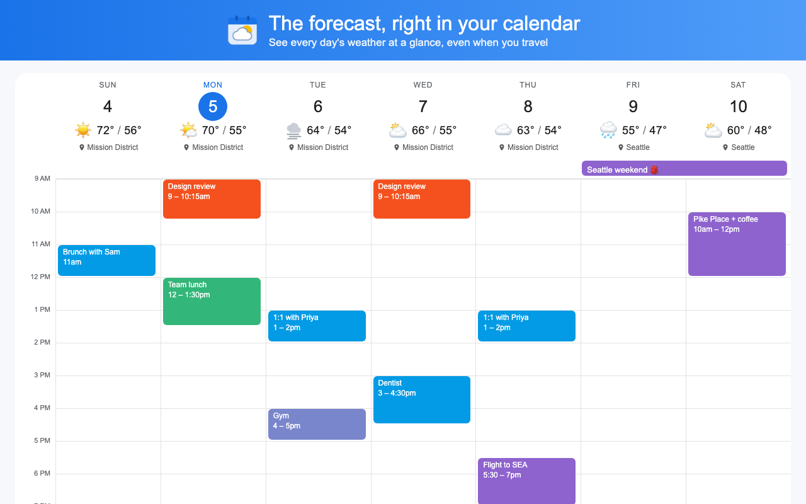
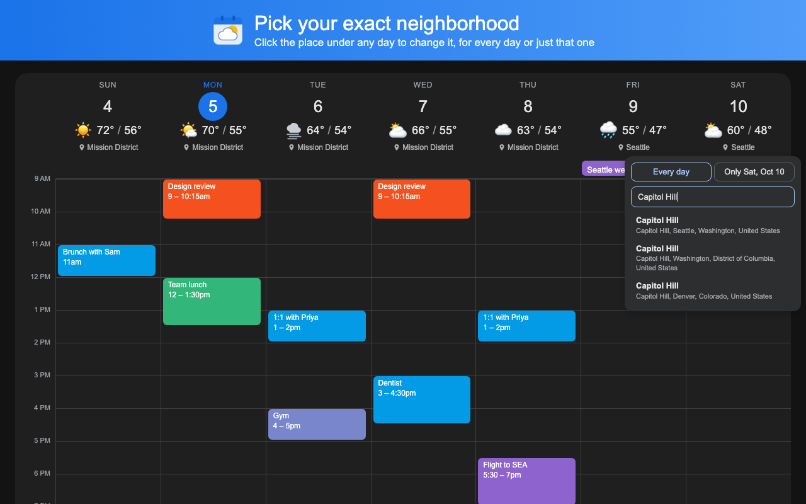

What it does
- Forecast under every dayIcon, high and low, and the place in week and day views. Month view gets a compact version next to each date.
- Travel-awareAn all-day event like “Austin weekend” switches those days to Austin’s forecast.
- Your actual neighborhoodSet home to your neighborhood rather than the nearest big city. A few miles can mean several degrees.
- Change it in placeClick the place under any day to pick another, for every day or just that one.
- Accurate in the USUses NOAA’s National Blend of Models, the data behind official National Weather Service forecasts.
- Fits inFollows Calendar’s light and dark themes and picks °F or °C for your region.

Setup
- Install Calendar Weather from the Chrome Web Store.
- On the settings page that opens, search for your neighborhood or city, or use your current location.
- Open or reload Google Calendar.
Support
- I don’t see any weather.
- Click the extension’s icon in the Chrome toolbar, set a location, then reload Google Calendar. Weather shows in week, day, and month views.
- The temperature doesn’t match my phone.
- Different weather providers usually differ by a few degrees. Hover a day to see which source it used. If it’s off by much more than that, email the place and date.
- A trip didn’t switch cities.
- Trip detection reads all-day events and needs Google Calendar set to English. It recognizes cities with more than 150,000 people by name; for smaller places, put the city in the event’s Location field. You can also click the place under any day to set it by hand.
- How far ahead does it go?
- About 16 days. Days further out show no weather.
Something else? Email support@daylor.ai.
Privacy
No account, no sign-in, no Google Calendar permissions, no analytics. Your settings stay in your browser. To get weather, the extension sends place coordinates to Open-Meteo and location searches to Photon (OpenStreetMap). To detect trips it reads the titles of all-day events on screen, and only possible city names from them leave your browser.